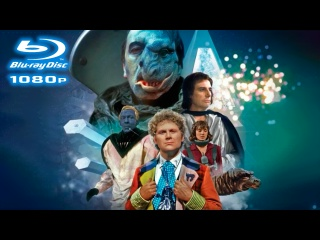
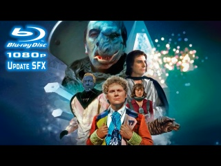
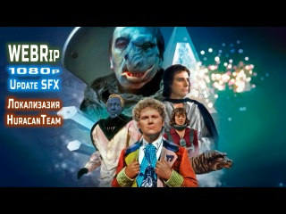
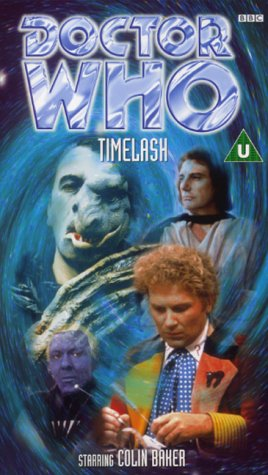
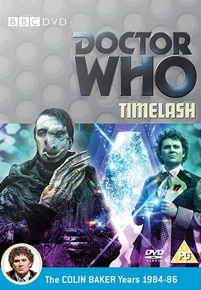
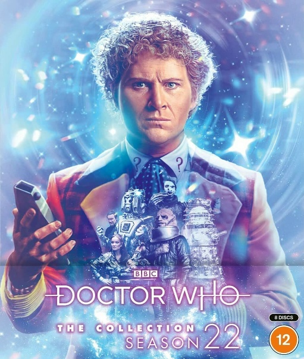
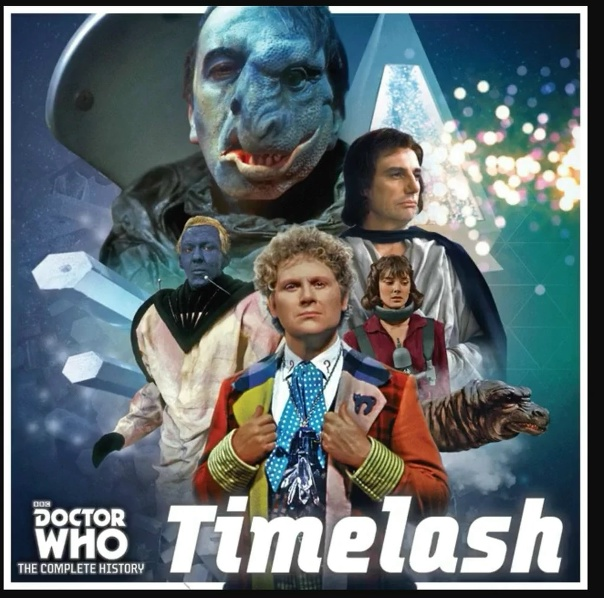
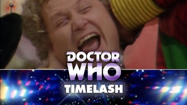

помощник
Субтитры: Русские и Английские |  |
|---|---|
с обновленными спецэффектами Субтитры: Русские и Английские |  |
с обновленными спецэффектами и фанатской локализацией видеоряда (HuracanTeam) Субтитры: Русские и Английские |  |
Timelash
Дата выхода: 9-16 марта 1985
Формат: 2 эпизода по 45 мин.
| помощник |
ТАРДИС затягивает контронным тоннелем на планету Карфел, где Доктор уже бывал в своей третьей инкарнации. Сейчас Карфелом правит Борад — мутировавший учёный, которого никто не видел вживую, только на экранах. Недовольных он сбрасывает в Зазор времени — временной коридор, вышвыривающий их в прошлое Земли. Борад провоцирует войну с соседней расой бандрилов, и у Доктора появляется шанс всё исправить — но для этого ему придётся пройти через Зазор времени в Шотландию 1885 года, где его ждёт молодой человек по имени Герберт.
Последняя серия классического сериала, в сюжет которой вплетена историческая личность — Герберт Джордж Уэллс, который ещё не стал знаменитым писателем. Доктор ссылается на приключение Третьего Доктора с Джо Грант, которое зрители никогда не видели на экране. А финал намекает на происхождение Лох-Несского чудовища. Серия из двух 45-минутных эпизодов считается одной из слабых в сезоне — говорят, бюджет не потянул задумку, и местами это видно.
 VHS - январь 1998 |  DVD - 9 июля 2007 |  Blu-ray - 20 июня 2022 * Версия в нашей группе |
|---|

